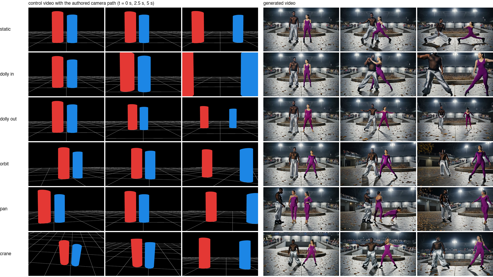
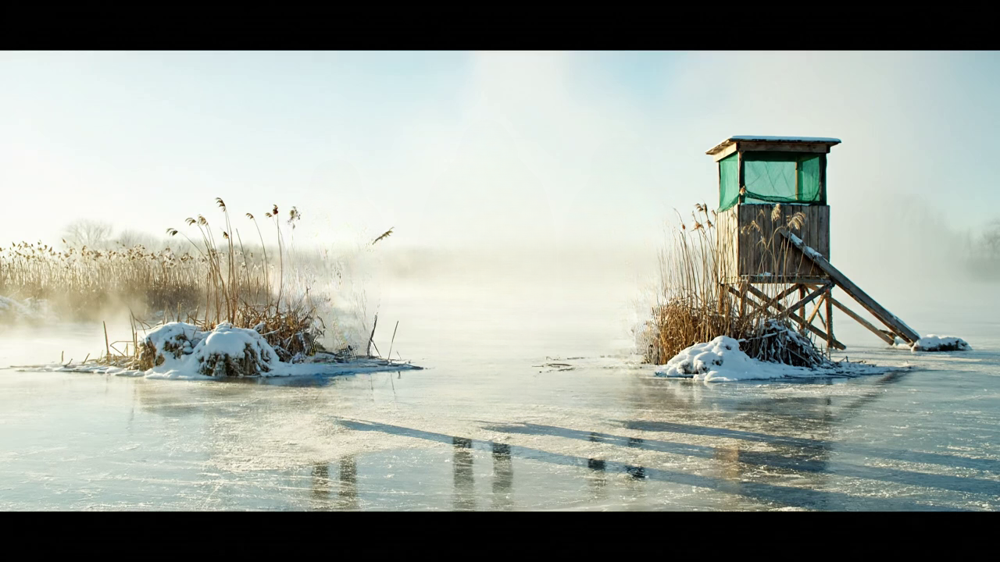

CoaG: Cylinders on a Grid
Coarse 3D layout control for video generation
Paper (draft PDF)CodeWeights (coming)Data (coming)
A user draws the crudest possible 3D scene, a ground grid and one cylinder per person, and moves the cylinders and the camera over 81 frames. A LoRA on Wan2.2-Fun-Control turns that sketch into a photoreal video in which the people stand where the cylinders stand, move as the cylinders move, and the camera moves as the drawn camera moves. Appearance comes from the text and a background reference image; layout and motion come from the geometry. The training pairs are produced by an automatic engine from text-to-video output, with no real footage and no manual labels.

Left: the control video (three of 81 frames). Right: generated videos. The rows share the geometry and differ only in the text (row 2) or the background reference image (row 3).
How the training pairs are made

One clip through the data engine: input frame, person masks (SAM 3.1), background (LaMa), ground mask (agent loop over SAM 3 phrases), plane and cylinders (HunyuanWorld-Mirror cameras and points, RANSAC plane), control frame.
Camera paths

Baselines
c0599: own caption, own background, original control
c0899: own caption, own background, original control
Change the people (text only)
c0599: elderly Scottish man in tweed + young Nigerian woman in a yellow raincoat
c0899: Norwegian man in a red sweater, Korean woman in a black puffer and white helmet, Mexican man in a blue tracksuit
Change the background (reference image)
c0599 geometry and people, reference image from c0899 (frozen lagoon)

c0899 geometry and people, reference image from c0599 (stadium plaza)

Change the camera (authored paths)
c0599: static
c0599: dolly in
c0599: dolly out
c0599: orbit
c0599: pan
c0599: crane
c0899: orbit
c0899: dolly in
All videos: hold-out clips (not in the training set), 480 x 832, 81 frames, 50 sampling steps, LoRA weight 0.55 on both experts, one fixed seed. Videos loop; hover to see the controls.